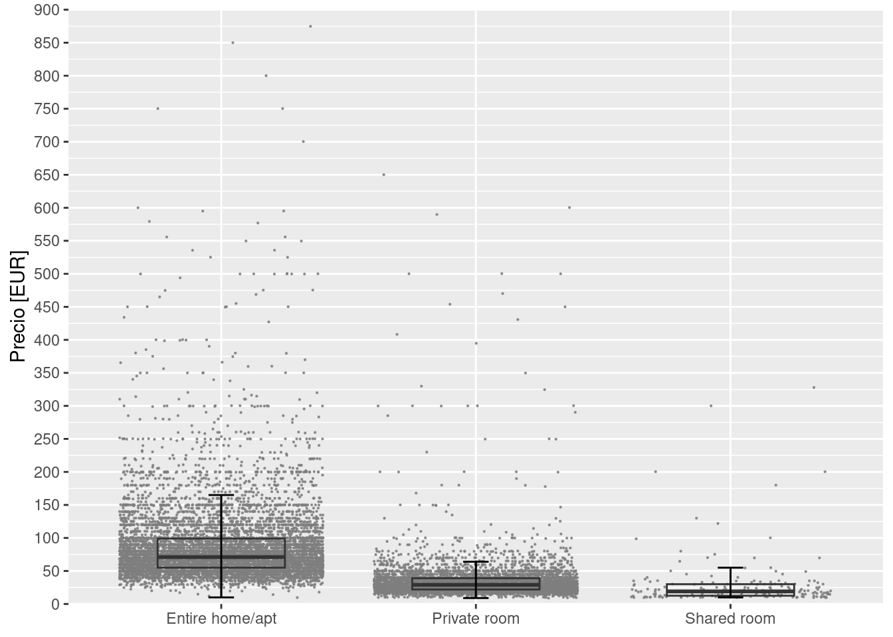
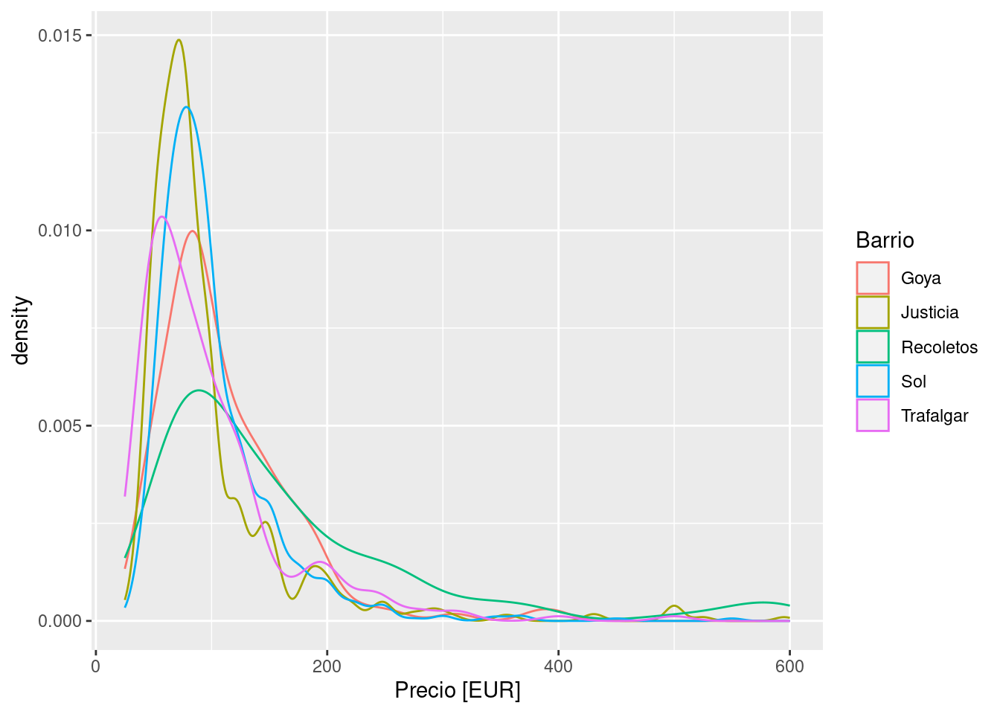
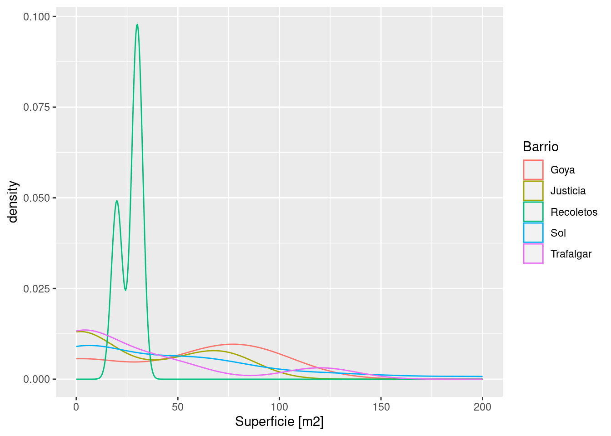
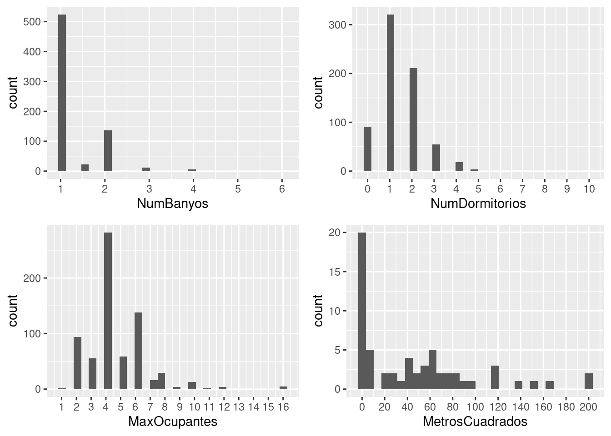

library(ggplot2)
library(gridExtra)
library(dplyr)1. Cargar los datos en un dataframe llamado: airbnb
airbnb <- read.csv('./data/airbnb.csv',sep = ',', stringsAsFactors = T)2. Mostrar las primeras 6 filas del dataframe
head(airbnb) Zipcode Neighbourhood.Cleansed Property.Type Room.Type Accommodates
1 28004 Universidad Apartment Private room 2
2 28004 Universidad Apartment Entire home/apt 6
3 28004 Universidad Apartment Entire home/apt 3
4 28004 Universidad Loft Entire home/apt 3
5 28015 Universidad Apartment Entire home/apt 5
6 28004 Universidad Apartment Entire home/apt 2
Bathrooms Bedrooms Beds Bed.Type
1 2 1 1 Real Bed
2 1 3 5 Real Bed
3 1 2 2 Real Bed
4 2 1 1 Real Bed
5 1 1 1 Real Bed
6 1 0 1 Real Bed
Amenities
1 TV,Wireless Internet,Kitchen,Pets allowed,Pets live on this property,Buzzer/wireless intercom,Heating,Suitable for events,Washer,First aid kit,Essentials,Lock on bedroom door,Iron
2 TV,Internet,Wireless Internet,Air conditioning,Kitchen,Indoor fireplace,Heating,Family/kid friendly,Washer,Dryer,Smoke detector,Carbon monoxide detector,Essentials,Shampoo
3 TV,Internet,Wireless Internet,Air conditioning,Kitchen,Doorman,Heating,Family/kid friendly,Washer,Essentials,Shampoo,Hangers,Hair dryer,Iron,Laptop friendly workspace
4 TV,Internet,Wireless Internet,Air conditioning,Kitchen,Pets allowed,Breakfast,Elevator in building,Indoor fireplace,Buzzer/wireless intercom,Heating,Washer,Essentials,Shampoo,Hangers,Hair dryer,Iron,Laptop friendly workspace,translation missing: en.hosting_amenity_49,translation missing: en.hosting_amenity_50
5 TV,Wireless Internet,Air conditioning,Kitchen,Smoking allowed,Pets allowed,Elevator in building,Heating,Family/kid friendly,Washer,Essentials,Iron
6 TV,Cable TV,Internet,Wireless Internet,Air conditioning,Wheelchair accessible,Kitchen,Doorman,Elevator in building,Buzzer/wireless intercom,Heating,Washer,Smoke detector,Carbon monoxide detector,First aid kit,Safety card,Fire extinguisher,Essentials,Shampoo,24-hour check-in,Hangers,Hair dryer,Iron,Laptop friendly workspace,Self Check-In,Doorman Entry
Square.Feet Price Review.Scores.Rating
1 NA 35 NA
2 NA 92 96
3 NA 55 91
4 NA 60 100
5 538 75 90
6 NA 55 953. Renombrar las columnas de la siguiente forma:
| Nombre original | Nuevo nombre |
|---|---|
| Zipcode | CodigoPostal |
| Neighbourhood.Cleansed | Barrio |
| Property.Type | TipoPropiedad |
| Room.Type | TipoAlquiler |
| Accommodates | MaxOcupantes |
| Bathrooms | NumBanyos |
| Bedrooms | NumDormitorios |
| Beds | NumCamas |
| Bed.Type | TipoCama |
| Amenities | Comodidades |
| Square.Feet | PiesCuadrados |
| Price | Precio |
| Review.Scores.Rating | Puntuacion |
newnames <- c("CodigoPostal", "Barrio", "TipoPropiedad", "TipoAlquiler","MaxOcupantes","NumBanyos", "NumDormitorios", "NumCamas", "TipoCama", "Comodidades", "PiesCuadrados","Precio", "Puntuacion")
colnames(airbnb) <- newnames4. Crea una nueva columna llamada MetrosCuadrados a partir de la columna PiesCuadrados.
Ayuda: 1 pie cuadrado son 0,092903 metros cuadradados.
m2perft2 <- 0.092903
airbnb$MetrosCuadrados <- airbnb$PiesCuadrados * m2perft25. Miremos el código postal. Es una variable con entradas erróneas. Hay valores como ’‘,’-’ y ‘28’ que deberían ser considerados como NA. Así mismo también debería ser NA todos los que no comiencen por 28, ya que estamos con códigos postales de Madrid.
El código postal 28002, 28004 y 28051 tienen entradas repetidas. Por ejemplo las entradas 28002 deberían ir dnetro de 28002.
El código 2804 debería ser 28004, 2805 deberia ser 28005 y 2815 junto con 2815 debería ser 28015.
5.1. Limpia los datos de la columna CodigoPostal.
clean_zip_code <- function(zipcode){
zipcode <- gsub("Madrid ", "", zipcode)
length_zc <- nchar(zipcode)
if(substr(zipcode, 1, 2) == "28" & length_zc > 3 & !is.na(zipcode)) {
if(length_zc == 4) {
zipcode <- paste0("280", substr(zipcode, 3, 4))
} else if(length_zc > 5){
zipcode <- paste0("28", substr(zipcode, length_zc - 2, length_zc))
}
} else {
zipcode <- NA
}
zipcode
}airbnb$CodigoPostal <- as.factor(sapply(airbnb$CodigoPostal, clean_zip_code))5.2. Una vez limpios los datos ¿Cuáles son los códigos postales que tenemos?
levels(airbnb$CodigoPostal) [1] "28001" "28002" "28003" "28004" "28005" "28006" "28007" "28008" "28009"
[10] "28010" "28011" "28012" "28013" "28014" "28015" "28016" "28017" "28018"
[19] "28019" "28020" "28021" "28022" "28023" "28024" "28025" "28026" "28027"
[28] "28028" "28029" "28030" "28031" "28032" "28033" "28034" "28035" "28036"
[37] "28037" "28038" "28039" "28040" "28041" "28042" "28043" "28044" "28045"
[46] "28046" "28047" "28048" "28049" "28050" "28051" "28052" "28053" "28054"
[55] "28055" "28056" "28058" "28060" "28094" "28105" "28850"5.3. ¿Cuáles son los 5 códigos postales con más entradas? ¿Y con menos? ¿Cuántas entradas tienen?
codigo_postal_freq <- table(airbnb$CodigoPostal) |>
as.data.frame() |>
arrange(desc(Freq))
names(codigo_postal_freq)[1] <- "CodigoPostal"
head(codigo_postal_freq, 5) CodigoPostal Freq
1 28012 2060
2 28004 1796
3 28005 1195
4 28013 1020
5 28014 630tail(codigo_postal_freq, 5) CodigoPostal Freq
57 28058 1
58 28060 1
59 28094 1
60 28105 1
61 28850 15.4. ¿Cuáles son los barrios que hay en el código postal 28012?
barrios28012 <- droplevels(airbnb$Barrio[which(airbnb$CodigoPostal == 28012)])
levels(barrios28012) [1] "Acacias" "Arapiles" "Atocha" "Cortes"
[5] "Delicias" "Embajadores" "Goya" "Palacio"
[9] "Palos de Moguer" "Sol" "Universidad" 5.5. ¿Cuántas entradas hay en cada uno de esos barrios para el código postal 28012?
summary(barrios28012) Acacias Arapiles Atocha Cortes Delicias
13 1 1 216 1
Embajadores Goya Palacio Palos de Moguer Sol
1449 1 27 46 301
Universidad
4 5.6. ¿Cuántos barrios hay en todo el dataset airbnb? ¿Cuáles son?
barrios <- levels(airbnb$Barrio)
length(barrios)[1] 125barrios [1] "Abrantes" "Acacias"
[3] "Adelfas" "Aeropuerto"
[5] "Aguilas" "Alameda de Osuna"
[7] "Almagro" "Almenara"
[9] "Almendrales" "Aluche"
[11] "Ambroz" "Amposta"
[13] "Apostol Santiago" "Arapiles"
[15] "Aravaca" "Arcos"
[17] "Argüelles" "Atocha"
[19] "Bellas Vistas" "Berruguete"
[21] "Buenavista" "Butarque"
[23] "Campamento" "Canillas"
[25] "Canillejas" "Cármenes"
[27] "Casa de Campo" "Casco Histórico de Barajas"
[29] "Casco Histórico de Vallecas" "Casco Histórico de Vicálvaro"
[31] "Castellana" "Castilla"
[33] "Castillejos" "Chopera"
[35] "Ciudad Jardín" "Ciudad Universitaria"
[37] "Colina" "Comillas"
[39] "Concepción" "Corralejos"
[41] "Cortes" "Costillares"
[43] "Cuatro Caminos" "Cuatro Vientos"
[45] "Delicias" "El Goloso"
[47] "El Plantío" "El Viso"
[49] "Embajadores" "Entrevías"
[51] "Estrella" "Fontarrón"
[53] "Fuente del Berro" "Fuentelareina"
[55] "Gaztambide" "Goya"
[57] "Guindalera" "Hellín"
[59] "Hispanoamérica" "Ibiza"
[61] "Imperial" "Jerónimos"
[63] "Justicia" "La Paz"
[65] "Legazpi" "Lista"
[67] "Los Angeles" "Los Rosales"
[69] "Lucero" "Marroquina"
[71] "Media Legua" "Mirasierra"
[73] "Moscardó" "Niño Jesús"
[75] "Nueva España" "Numancia"
[77] "Opañel" "Orcasitas"
[79] "Orcasur" "Pacífico"
[81] "Palacio" "Palomas"
[83] "Palomeras Bajas" "Palomeras Sureste"
[85] "Palos de Moguer" "Pavones"
[87] "Peñagrande" "Pilar"
[89] "Pinar del Rey" "Piovera"
[91] "Portazgo" "Pradolongo"
[93] "Prosperidad" "Pueblo Nuevo"
[95] "Puerta Bonita" "Puerta del Angel"
[97] "Quintana" "Recoletos"
[99] "Rejas" "Rios Rosas"
[101] "Rosas" "Salvador"
[103] "San Andrés" "San Cristobal"
[105] "San Diego" "San Fermín"
[107] "San Isidro" "San Juan Bautista"
[109] "San Pascual" "Santa Eugenia"
[111] "Simancas" "Sol"
[113] "Timón" "Trafalgar"
[115] "Universidad" "Valdeacederas"
[117] "Valdefuentes" "Valdemarín"
[119] "Valdezarza" "Vallehermoso"
[121] "Valverde" "Ventas"
[123] "Vinateros" "Vista Alegre"
[125] "Zofío" 5.7. ¿Cuáles son los 5 barrios que tienen mayor número entradas?
barrios_freq <- table(airbnb$Barrio) |>
as.data.frame() |>
arrange(desc(Freq))
colnames(barrios_freq)[1] <- "Barrios"
head(barrios_freq, 5) Barrios Freq
1 Embajadores 1844
2 Universidad 1358
3 Palacio 1083
4 Sol 940
5 Justicia 7855.8. ¿Cuántos Tipos de Alquiler diferentes hay? ¿Cuáles son? ¿Cuántas entradas en el dataframe hay por cada tipo?
table(airbnb$TipoAlquiler)
Entire home/apt Private room Shared room
7903 5113 191 5.9. Muestra el diagrama de cajas del precio para cada uno de los diferentes Tipos de Alquiler
ggplot(data=airbnb, aes(x = TipoAlquiler, y = Precio)) +
geom_jitter(color="grey50", size = 0.1, alpha = 0.8) +
geom_boxplot(width = 0.5, alpha = 0, outlier.color = NA) +
stat_boxplot(geom = "errorbar", width = 0.1) +
xlab(NULL) +
ylab("Precio [EUR]") +
scale_y_continuous(limits = c(0, 900), breaks = seq(0, 900, 50), expand = c(0, 0)) +
theme(legend.position = "none")
5.10. Cuál es el precio medio de alquiler de cada uno, la diferencia que hay ¿es estadísticamente significativa? ¿Con qué test lo comprobarías?
airbnb |>
group_by(TipoAlquiler) |>
summarise(PrecioMedio = mean(Precio, na.rm = TRUE))# A tibble: 3 × 2
TipoAlquiler PrecioMedio
<fct> <dbl>
1 Entire home/apt 87.3
2 Private room 34.3
3 Shared room 29.9Se realiza el test de Kruskal-Wallis, previa comprobación de que los precios para cada tipo de alquiler no siguen una distribución normal, y se observa que hay evidencias significativas para concluir que las medias de los precios para cada tipo de alquiler proceden de distintos grupos (\(p\text{-}value \lt 2.2\text{e-}16\)).
tipos_alquiler <- levels(airbnb$TipoAlquiler)
significance_level <- 0.05
print(paste0("Nivel de significación: ", significance_level * 100, "%"))[1] "Nivel de significación: 5%"for (tipo_alquiler in tipos_alquiler){
shapiro_test <- shapiro.test(airbnb$MetrosCuadrados[airbnb$TipoAlquiler == tipo_alquiler])
print(paste0("Tipo de alquiler: ", tipo_alquiler,
". p-value: ", round(shapiro_test$p.value, 5),
ifelse(shapiro_test$p.value > significance_level,
". No se rechaza normalidad",
". Se rechaza normalidad")))
}[1] "Tipo de alquiler: Entire home/apt. p-value: 0. Se rechaza normalidad"
[1] "Tipo de alquiler: Private room. p-value: 0. Se rechaza normalidad"
[1] "Tipo de alquiler: Shared room. p-value: 0.02586. Se rechaza normalidad"kruskal.test(Precio ~ TipoAlquiler, data = airbnb)
Kruskal-Wallis rank sum test
data: Precio by TipoAlquiler
Kruskal-Wallis chi-squared = 7235.6, df = 2, p-value < 2.2e-166. Filtra el dataframe cuyos tipo de alquiler sea ‘Entire home/apt’ y guárdalo en un dataframe llamado airbnb_entire. Estas serán las entradas que tienen un alquiler del piso completo.
airbnb_entire <- subset(airbnb, TipoAlquiler == 'Entire home/apt')6.1. ¿Cuáles son los 5 barrios que tienen un mayor número de apartamentos enteros en alquiler? Nota: Mirar solo en airbnb_entire. A partir de este punto y hasta que se diga lo contrario partiremos de airbnb_entire.
entire_home_barrios_freq <- table(airbnb_entire$Barrio) |>
as.data.frame() |>
arrange(desc(Freq))
colnames(entire_home_barrios_freq)[1] <- "Barrio"
head(entire_home_barrios_freq, 5) Barrio Freq
1 Embajadores 1228
2 Universidad 984
3 Palacio 769
4 Sol 701
5 Cortes 5746.2. ¿Cuáles son los 5 barrios que tienen un mayor precio medio de alquiler para apartamentos enteros (es decir, del dataframe airbnb_entire)?
precio_medio_barrio <- airbnb_entire |>
group_by(Barrio) |>
summarise(PrecioMedio = mean(Precio, na.rm = TRUE),
Apartamentos = n()) |>
arrange(desc(PrecioMedio))
precio_medio_barrio |> head(5)# A tibble: 5 × 3
Barrio PrecioMedio Apartamentos
<fct> <dbl> <int>
1 Palomas 310. 4
2 Fuentelareina 180 2
3 Recoletos 162. 135
4 El Plantío 150 1
5 Castellana 141. 736.3. Partiendo del dataframe anterior, muestra los 5 barrios con mayor precio, pero que tengan más de 100 entradas de alquiler.
barrios_top5_precio <- precio_medio_barrio |>
filter(Apartamentos > 100) |>
head(5)
barrios_top5_precio# A tibble: 5 × 3
Barrio PrecioMedio Apartamentos
<fct> <dbl> <int>
1 Recoletos 162. 135
2 Goya 111. 142
3 Sol 101. 701
4 Trafalgar 98.6 223
5 Justicia 98.3 534barrios_top5 <- levels(droplevels(barrios_top5_precio$Barrio))
barrios_top5_precio_df <- droplevels(airbnb_entire[airbnb_entire$Barrio %in% barrios_top5, ])6.4. Dibuja el diagrama de densidad de distribución de los diferentes precios. Serían 5 gráficas, una por cada barrio.
ggplot(data = barrios_top5_precio_df, aes(x = Precio, color = Barrio)) +
geom_density() +
xlab("Precio [EUR]")
6.5. Calcula el tamaño medio, en metros cuadrados, para los 5 barrios anteriores y muéstralo en el mismo dataframe junto con el precio y número de entradas.
airbnb_entire |>
group_by(Barrio) |>
summarise(PrecioMedio = mean(Precio, na.rm = TRUE),
Apartamentos = n(),
SuperficieMedia = mean(MetrosCuadrados, na.rm = TRUE)) |>
filter(Apartamentos > 100) |>
arrange(desc(PrecioMedio)) |>
head(5)# A tibble: 5 × 4
Barrio PrecioMedio Apartamentos SuperficieMedia
<fct> <dbl> <int> <dbl>
1 Recoletos 162. 135 26.7
2 Goya 111. 142 51.7
3 Sol 101. 701 45.6
4 Trafalgar 98.6 223 29.3
5 Justicia 98.3 534 28.56.6. Dibuja el diagrama de densidad de distribución de los diferentes tamaños de apartamentos. Serían 5 gráficas, una por cada barrio.
ggplot(data = barrios_top5_precio_df, aes(x = MetrosCuadrados, color = Barrio)) +
geom_density() +
xlab("Superficie [m2]")
6.7. Está claro que las medias de metros cuadrados de cada uno de estos 5 barrios parecen ser diferentes, pero ¿son estadísticamente diferentes? ¿Qué test habría que usar para comprobarlo?
significance_level <- 0.05
print(paste0("Nivel de significación: ", significance_level * 100, "%"))[1] "Nivel de significación: 5%"for (barrio in barrios_top5){
shapiro_test <- shapiro.test(airbnb_entire$MetrosCuadrados[airbnb_entire$Barrio == barrio])
print(paste0("Barrio: ", barrio,
". p-value: ", round(shapiro_test$p.value, 5),
ifelse(shapiro_test$p.value > significance_level,
". No se rechaza normalidad",
". Se rechaza normalidad")))
}[1] "Barrio: Goya. p-value: 0.51992. No se rechaza normalidad"
[1] "Barrio: Justicia. p-value: 0.00064. Se rechaza normalidad"
[1] "Barrio: Recoletos. p-value: 0. Se rechaza normalidad"
[1] "Barrio: Sol. p-value: 0. Se rechaza normalidad"
[1] "Barrio: Trafalgar. p-value: 0.01276. Se rechaza normalidad"Para validar la idea de que la superficie media de los pisos de cada uno de los barrios son diferentes, primero se realiza el test de normalidad de Shapiro-Wilk y se observa que hay evidencias estadísticas de que la superficie en el barrio de Goya no sigue una distribución normal. Hecha esta comprobación, se realiza el test de Kruskal-Wallis y se concluye que, a pesar de que observando la distribución de los metros cuadrados de cada barrio podría parecer que las superficies medias pertencen a grupos distintos, no hay evidencias significativas de que cada barrio tenga una superficie media distinta ( \(p\text{-}value = 0.7574\)).
barrios_top5_precio_df <- droplevels(airbnb_entire[airbnb_entire$Barrio %in% barrios_top5, ])
kruskal.test(MetrosCuadrados ~ Barrio, data = barrios_top5_precio_df)
Kruskal-Wallis rank sum test
data: MetrosCuadrados by Barrio
Kruskal-Wallis chi-squared = 1.882, df = 4, p-value = 0.75747. Para únicamente los pisos de alquiler en el barrio de Sol:
barrio_sol<-subset(airbnb_entire,Barrio=="Sol")
barrio_sol <- subset(airbnb_entire, Barrio == "Sol")Calcular un modelo lineal que combine alguna de estas variables: * NumBanyos * NumDormitorios * MaxOcupantes * MetrosCuadrados
7.1. Primero calculamos la correlación para ver como se relacionan estas variables entre sí.
cor(barrio_sol[,c("NumBanyos", "NumDormitorios", "MaxOcupantes", "MetrosCuadrados")], use = "pairwise.complete.obs") NumBanyos NumDormitorios MaxOcupantes MetrosCuadrados
NumBanyos 1.0000000 0.6761906 0.6578162 0.4820549
NumDormitorios 0.6761906 1.0000000 0.7594598 0.5684521
MaxOcupantes 0.6578162 0.7594598 1.0000000 0.4286233
MetrosCuadrados 0.4820549 0.5684521 0.4286233 1.00000007.2. Se observa que la correlación entre el número de dormitorios y los metros cuadrados es sorprendentemente baja. ¿Son de fiar esos números?
Hay pisos que tienen una superficie menor de \(20 m^2\) lo que no parece que sea consistente con el tipo de alquiler considerado y puede estar distorsionando la correlación de la variable MetrosCuadrados con el resto de variables.
7.3. Mediante un histograma o curvas de densidad podemos descartar números que no tienen sentido en el dataframe barrio_sol, para tener una matriz de correlación que tenga mayor sentido.
bathrooms <- ggplot(data=barrio_sol, aes(NumBanyos)) +
scale_x_continuous(breaks = seq(0, max(barrio_sol$NumBanyos, na.rm = TRUE), 1)) +
geom_histogram()
bedrooms <- ggplot(data=barrio_sol, aes(NumDormitorios)) +
scale_x_continuous(breaks = seq(0, max(barrio_sol$NumDormitorios, na.rm = TRUE), 1)) +
geom_histogram()
accommodates <- ggplot(data=barrio_sol, aes(MaxOcupantes)) +
scale_x_continuous(breaks = seq(0, max(barrio_sol$MaxOcupantes, na.rm = TRUE), 1)) +
geom_histogram()
m2 <- ggplot(data=barrio_sol, aes(MetrosCuadrados)) +
scale_x_continuous(breaks = seq(0, max(barrio_sol$MetrosCuadrados, na.rm = TRUE), 20)) +
geom_histogram()
grid.arrange(bathrooms, bedrooms, accommodates, m2, ncol = 2)
7.4. Una vez que hayamos filtrado los datos correspondientes calcular el valor o la combinación de valores que mejor nos permite obtener el precio de un inmueble.
barrio_sol$MetrosCuadrados[which(barrio_sol$MetrosCuadrados < 19)] <- NA
linmodel <- lm(Precio ~ NumBanyos + NumDormitorios + MaxOcupantes + MetrosCuadrados, data=barrio_sol)
summary(linmodel)
Call:
lm(formula = Precio ~ NumBanyos + NumDormitorios + MaxOcupantes +
MetrosCuadrados, data = barrio_sol)
Residuals:
Min 1Q Median 3Q Max
-76.852 -13.673 -5.048 18.523 69.473
Coefficients:
Estimate Std. Error t value Pr(>|t|)
(Intercept) 28.0362 12.9584 2.164 0.03859 *
NumBanyos 0.5647 14.6038 0.039 0.96941
NumDormitorios 28.2119 8.5440 3.302 0.00249 **
MaxOcupantes 2.6738 4.4329 0.603 0.55093
MetrosCuadrados 0.2237 0.2050 1.091 0.28393
---
Signif. codes: 0 '***' 0.001 '**' 0.01 '*' 0.05 '.' 0.1 ' ' 1
Residual standard error: 31.32 on 30 degrees of freedom
(666 observations deleted due to missingness)
Multiple R-squared: 0.7588, Adjusted R-squared: 0.7267
F-statistic: 23.6 on 4 and 30 DF, p-value: 6.728e-09La variable NumDormitorios es estadísticamente significativa para un \(\alpha = 1\%\), mientras que las variables NumBanyos, MaxOcupantes y MetrosCuadrados no son relevantes para ningún nivel de significación, por lo que se descartan.
bedrooms_lm <- lm(Precio ~ NumDormitorios, data=barrio_sol)
summary(bedrooms_lm)
Call:
lm(formula = Precio ~ NumDormitorios, data = barrio_sol)
Residuals:
Min 1Q Median 3Q Max
-206.225 -22.676 -4.312 16.416 263.960
Coefficients:
Estimate Std. Error t value Pr(>|t|)
(Intercept) 52.584 2.568 20.48 <2e-16 ***
NumDormitorios 33.364 1.459 22.87 <2e-16 ***
---
Signif. codes: 0 '***' 0.001 '**' 0.01 '*' 0.05 '.' 0.1 ' ' 1
Residual standard error: 38.9 on 699 degrees of freedom
Multiple R-squared: 0.4281, Adjusted R-squared: 0.4272
F-statistic: 523.1 on 1 and 699 DF, p-value: < 2.2e-167.5. ¿Qué variable es más fiable para conocer el precio de un inmueble, el número de habitaciones o los metros cuadrados?
La variable NumDormitorios tiene un \(p\text{-}valor = 0.00249\) mientras que la variable MetrosCuadrados tiene un \(p\text{-}valor = 0.28393\), por lo que no es significativa (no se rechaza la hipótesis de que su parámetro asociado sea nulo).
7.6. Responde con su correspondiente margen de error del 95%, ¿cuántos euros incrementa el precio del alquiler por cada metro cuadrado extra del piso?
m2_lm <- lm(Precio ~ MetrosCuadrados, data=barrio_sol)
b_m2 <- m2_lm$coefficients[2]
l_confint <- confint(m2_lm)[2, 1]
u_confint <- confint(m2_lm)[2, 2]
print(paste0("La estimación es que por cada m2 adicional, el precio del piso se incremente en ", round(b_m2, 2), " euros, con un márgen de error de ", round((u_confint - l_confint) / 2, 2), " euros."))[1] "La estimación es que por cada m2 adicional, el precio del piso se incremente en 0.98 euros, con un márgen de error de 0.29 euros."7.7. Responde con su correspondiente margen de error del 95%, ¿cuántos euros incrementa el precio del alquiler por cada habitación?
b_bedrooms <- bedrooms_lm$coefficients[2]
l_confint <- confint(bedrooms_lm)[2, 1]
u_confint <- confint(bedrooms_lm)[2, 2]
print(paste0("La estimación es que por cada habitación adicional, el precio del piso se incremente en ", round(b_bedrooms, 2), " euros, con un márgen de error de ", round((u_confint - l_confint) / 2, 2), " euros."))[1] "La estimación es que por cada habitación adicional, el precio del piso se incremente en 33.36 euros, con un márgen de error de 2.86 euros."7.8. ¿Cuál es la probabilidad de encontrar, en el barrio de Sol, un apartamento en alquiler con 3 dormitorios? ¿Cuál es el intervalo de confianza de esa probabilidad?
Para estimar la probabilida de encontrar un apartamento de tres habitaciones que esté en alquiler en el barrio de Sol partimos del estimador \(\hat{p} \, \colon= \frac{1}{n} \sum_{i=1}^{n} X_i\), donde cada variable aleatoria \(X_i \sim Bernoulli(p)\), siendo \(X_i = 1\) cuando se observe un apartamento de 3 habitaciones, dentro del conjunto de apartamentos que están en alquiler en el bario de Sol y, \(X_i = 0\) en otro caso, con \(i = 1, \dots, n\). Sabemos que la \(\mathbb{E}( \hat{p}) = p\), por lo tanto, \(n \, \hat{p} \sim Bin(n, p)\), de modo que conociendo la distribución de probabilidad de \(\hat{p}\) podemos determinar un intervalo de cofianza para dicho estadístico.
ns <- sum(barrio_sol$NumDormitorios == 3)
n <- length(barrio_sol$NumDormitorios)
bin_test <- binom.test(ns, n)
bin_test
Exact binomial test
data: ns and n
number of successes = 55, number of trials = 701, p-value < 2.2e-16
alternative hypothesis: true probability of success is not equal to 0.5
95 percent confidence interval:
0.0596506 0.1009033
sample estimates:
probability of success
0.07845934 print(paste0("Probabilidad de encontrar un apartamento de 3 habitaciones en alquiler en el barrio de Sol: ", round(bin_test$estimate[[1]], 5) * 100, "%"))[1] "Probabilidad de encontrar un apartamento de 3 habitaciones en alquiler en el barrio de Sol: 7.846%"print(paste0("Intervalo de confianza (", attr(bin_test$conf.int, "conf.level") * 100 ,"%): (", round(bin_test$conf.int[1], 5) * 100,"%, ", round(bin_test$conf.int[2], 5) * 100, "%)"))[1] "Intervalo de confianza (95%): (5.965%, 10.09%)"